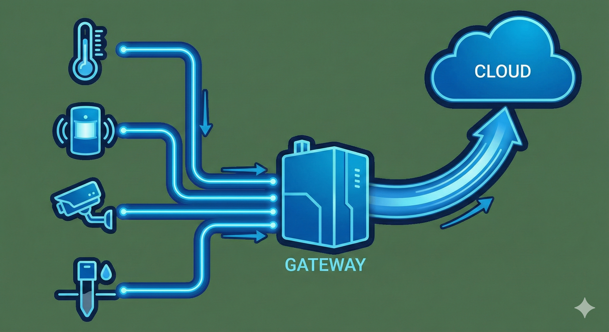
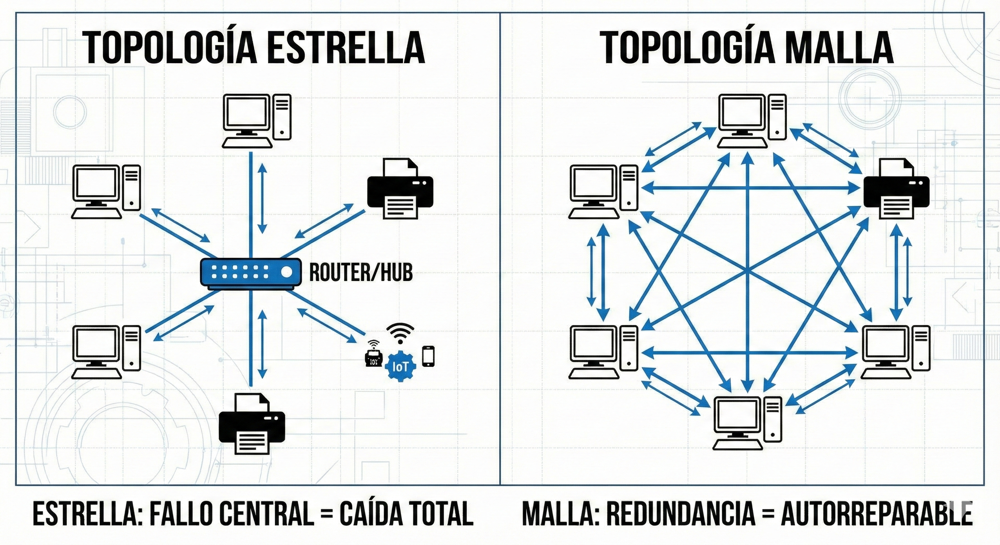

1. La 4ª Revolución Industrial
El IoT no es solo conectar cosas. Es la base de la Industria 4.0. Se define como una red de objetos físicos ("cosas") que llevan integrados sensores, software y otras tecnologías con el fin de conectar e intercambiar datos con otros dispositivos a través de Internet.
Concepto Clave: Edge vs. Cloud Computing
Cloud Computing (La Nube): Los datos se envían a servidores lejanos (AWS, Google) para ser procesados. Es potente pero lento (latencia).
Edge Computing (El Borde): El procesamiento se hace en el propio sensor o cerca de él. Ejemplo: Una cámara de seguridad que detecta una cara y solo envía la alerta, no todo el vídeo, ahorrando ancho de banda y tiempo.

Fig 1. Flujo de datos en IoT
2. Señales: El Lenguaje de las Máquinas
Para comprender la computación física, es vital distinguir cómo "hablan" los sensores. No todos envían la información igual.
Señales Digitales
Solo tienen dos estados posibles: 0 o 1 (Encendido/Apagado, Verdadero/Falso).
- Ejemplo: Pulsador, Sensor de movimiento PIR (¿hay alguien? Sí/No).
- Gráfica: Onda cuadrada.
Señales Analógicas
Pueden tener infinitos valores dentro de un rango. Son más precisas para medir la realidad.
- Ejemplo: Temperatura (20.5ºC, 20.6ºC...), LDR (Luz), Potenciómetro.
- Conversión: El microcontrolador usa un ADC (Conversor Analógico-Digital) para entenderlas.
Clasificación Técnica de Sensores Comunes
| Sensor | Tipo de Señal | Uso Práctico |
|---|---|---|
| DHT11 | Digital (Protocolo propio) | Estaciones meteorológicas caseras |
| LDR (Fotorresistencia) | Analógica | Encendido automático de farolas |
| HC-SR04 (Ultrasonidos) | Digital (Pulsos) | Medir distancia (sensor de aparcamiento) |
3. Topologías de Red: ¿Cómo se conectan?
Además del protocolo (WiFi, Zigbee), importa la forma en que se conectan los dispositivos. Esto define la robustez de la red.
-
Topología en Estrella (Star)
Todos los dispositivos se conectan a un punto central (Router). Si el router falla, toda la red cae.
Ejemplo: Wi-Fi doméstica. -
Topología en Malla (Mesh)
Los dispositivos se conectan entre sí. Si uno falla, la señal busca otro camino. Es autorreparable.
Ejemplo: Zigbee (Bombillas Hue), Thread.

Tabla Comparativa de Protocolos (Profunda)
| Protocolo | Alcance | Consumo Energía | Ancho de Banda | Topología |
|---|---|---|---|---|
| Wi-Fi | Medio (50m) | Alto 🔴 | Muy Alto (Vídeo) | Estrella |
| Bluetooth LE | Corto (10m) | Muy Bajo 🟢 | Medio (Audio/Datos) | Punto a Punto |
| Zigbee | Medio (10-100m) | Bajo 🟢 | Bajo (Comandos) | Malla (Mesh) |
| LoRaWAN | Muy Largo (Km) | Muy Bajo 🟢 | Muy Bajo (Bytes) | Estrella extendida |
El Gran Reto: Seguridad IoT
Los dispositivos IoT suelen ser el eslabón más débil de la seguridad informática. Muchos vienen con contraseñas por defecto (ej: "admin/admin") que los usuarios nunca cambian.
Hackers infectan miles de cámaras y neveras inteligentes para crear un "ejército zombi" y atacar servidores web (Ataque DDoS).
Una aspiradora inteligente mapea tu casa. Un reloj inteligente conoce tu salud. ¿Quién tiene esos datos?
Misiones Prácticas
Misión 1: Simulación Digital (Tinkercad)
Herramienta DigitalEn lugar de papel, usarás el simulador Tinkercad Circuits.
- Entra en Tinkercad y crea un nuevo circuito.
- Añade una placa Arduino UNO.
- Conecta un Sensor de Temperatura (TMP36) a un puerto analógico.
- Conecta un LED rojo que actúe como alarma (actuador).
- Entrega: Una captura de pantalla de tu esquema de conexiones. (No es necesario programar el código completo, solo el diseño físico).
Misión 2: Arquitecto de Redes (Casos de Estudio)
Análisis CríticoLee los siguientes escenarios y decide qué protocolo (WiFi, BT, Zigbee, LoRa) es el adecuado. Justifica tu respuesta basándote en la tabla de teoría.
Misión 3: Auditoría de Vulnerabilidades
InvestigaciónBusca en internet información sobre el "Ataque Mirai Botnet" o sobre "Shodan.io" (el buscador de IoT). Escribe un breve informe (10 líneas) explicando por qué es peligroso dejar la contraseña "admin" en una cámara web.
Misión Final: Infografía "El Futuro Conectado"
Utiliza Canva o Genially para crear una infografía visual que explique un sistema IoT completo (ej: Smart Farming). Debe incluir visualmente: Sensores, Tipo de Conexión, Procesamiento y Actuadores.